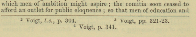

Code Footnotes
Using @-codes for footnotes.
In order to improve the accuracy of our encoding, we manually tag all footnote anchors and note text in the Text pane. For this purpose, we use an easily-recognizable system of at codes.
Note: If you encounter footnote text that runs over to the next page,
insert a comment in the Create a Page-Inventory File to alert the person
doing the conversion to TEI, so the problem can be corrected there.
-
In the body of the text, find the footnote reference number and insert
@@(2-@) before each. -
In the note blocks, where the footnote text is, insert
@@@(3-@) before each footnote number. - If the note is a marginal note, rather than a footnote, see Code Marginal Notes
-
If you encounter two footnotes on the same line, add a
Return between them, so each is in a separate
paragraph.
Figure 1. Two footnotes on the same line. 
-
Check that you have the same number of double and triple @'s before leaving the
page.